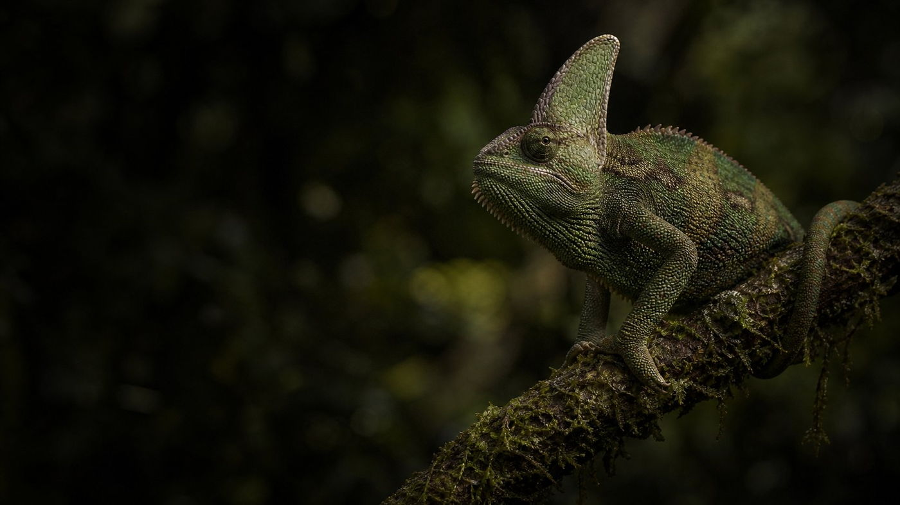
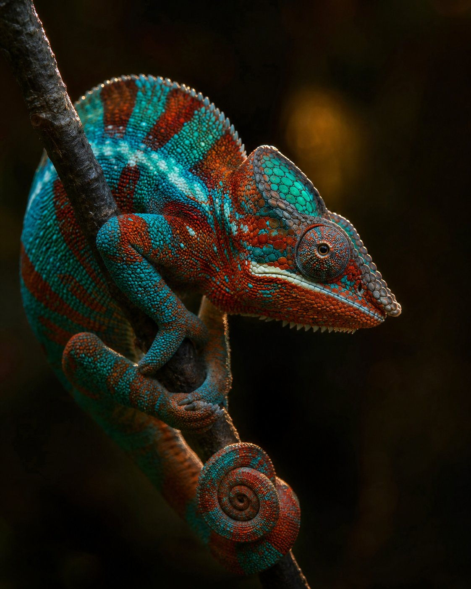
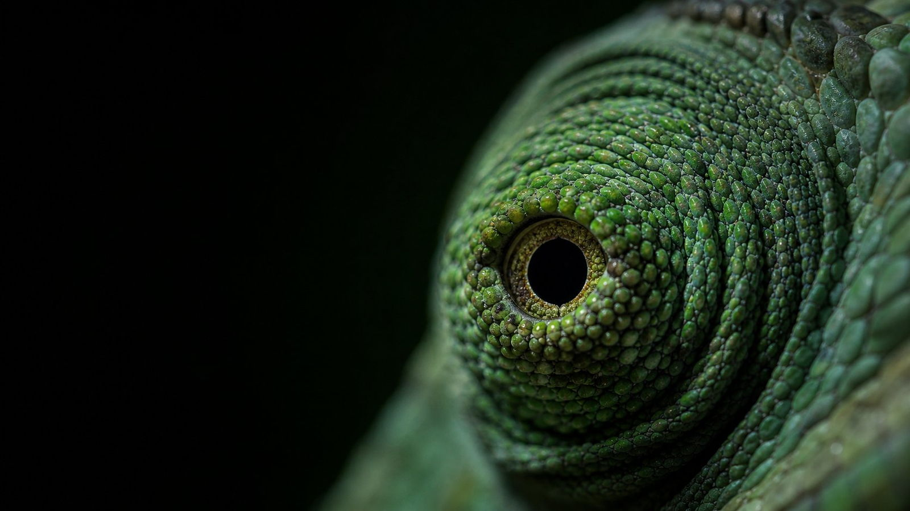
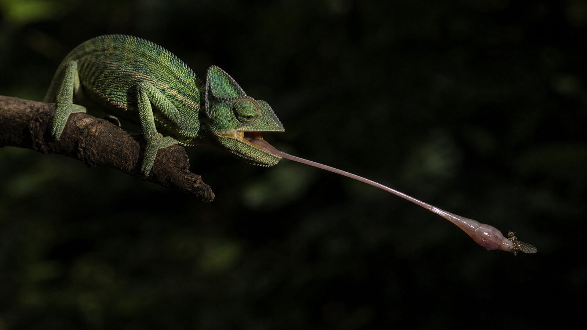
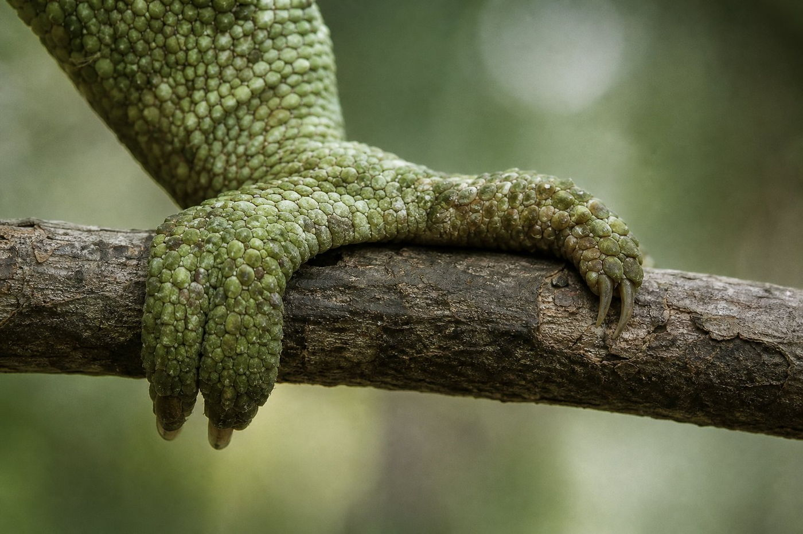
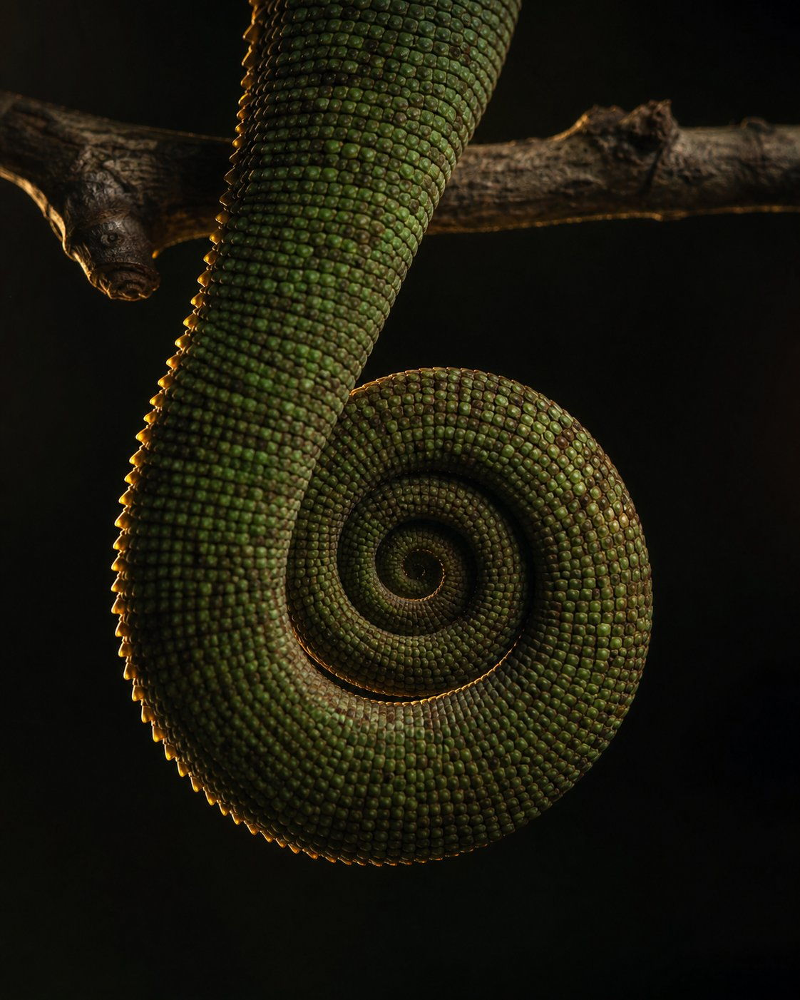

01
Vision
Two eyes working on separate problems, joined only when an aim has to be exact.
Field notes — Reptilia · Chamaeleonidae
Master of Adaptation Slow by design. Fast by surprise.
A family of roughly two hundred Old World lizards, rebuilt from the skull out around one strategy: stay unnoticed, watch in two directions at once, and strike faster than the eye can follow.
Everything about a chameleon is a decision already made — a slow animal that has bet its life on not being seen.
Field note 001
Section 01 — Identity
A chameleon is not simply a lizard with remarkable skin. It is a lizard whose skeleton, eyes, tongue and feet have all been shaped by the same problem: how to live in full view of the forest and still go unnoticed.
Chameleons form a single family, Chamaeleonidae, and most of them are arboreal — at home in shrubs, thickets and canopy, where they move slowly, deliberately, one foot at a time. Most species are also solitary, holding small territories they defend with posture and colour long before they defend them with teeth.
Their stronghold is sub-Saharan Africa. Nearly half of all known species live in Madagascar, and the great majority of those are found nowhere else on Earth. A smaller number reach further: into southern Europe, the Middle East, and South Asia — the chameleons of India and Sri Lanka are among the few that live outside Africa entirely.

Section 02 — Signal
Chameleons do not turn invisible. They talk — and most of what they say is addressed to other chameleons.

The idea that a chameleon dissolves into whatever surface it touches comes mostly from folklore. In reality colour is a live, continuous signal: territory, courtship, refusal, temperature and health, all worn on the outside. Camouflage is part of the vocabulary — never the whole sentence.
Beneath the surface sit layered cells: xanthophores and erythrophores holding yellow and red pigments, melanophores holding dark brown and black. Between them lie iridophores — cells packed with microscopic crystals of guanine.
In 2015 a research team working on panther chameleons showed that the crystals in the upper iridophore layer are spaced so precisely they reflect specific wavelengths of light: a living photonic lattice. By widening or tightening that spacing, the animal shifts the colour it reflects. A deeper layer reflects near-infrared light and appears to help it manage heat.
Teyssier et al., “Photonic crystals cause active colour change in chameleons”, Nature Communications, 2015
Four things colour is for
Select a role — the field changes with it.
This is the loudest use of colour. A male escalation is staged in full view: saturated pigment, a swollen throat, a body turned broadside. A rival reads the message from a distance and frequently never has to be fought — which is the point.
Aggression · courtship · submission · territory
A cool chameleon darkens. Dark pigment absorbs more solar radiation, so the animal warms faster while it basks. As its body temperature climbs, it pales again — reflecting light rather than collecting it. Morning and evening, the same animal can look like two different species.
Darker to warm · paler to reflect
Matching a background is real, but it is quieter than the myth suggests. Many species tune their tone and brightness to the leaves or bark they sit against, breaking up their outline rather than becoming perfectly invisible. Camouflage is one instrument in the set — not the whole performance.
Tone, brightness and pattern against a background
Colour is also a status report. A receptive female advertises readiness with particular tones; a pregnant female signals refusal; a sick or stressed animal loses saturation and dulls. Because the signal is honest — it costs the body something to produce — it is worth reading.
Receptivity · gravidity · stress · health
Section 03 — Vision
A chameleon's eye is a cone of skin with a pinhole in it — and the two of them are not obliged to agree.
The eyeball sits inside a ring of tightly fused scales — a conical eyelid that wraps everything except a small circular opening for the pupil. There is no white to read, no obvious direction of gaze. From the outside, you cannot tell where the animal is looking. That is the advantage.
Each eye is driven separately. One can track the sky while the other reads the ground beneath it — two searches running at once.
Between them, the eyes reach almost the entire space around the head — a combined field of view far wider than a forward-facing predator's.
When something moves, both eyes swing in and lock onto it, overlapping briefly. That narrow window of binocular vision is when the tongue is committed.
Because the eyes point apart most of the time, distance seems to be judged largely by the effort of focusing rather than by stereo vision alone — an unusual solution, and a workable one.

Section 04 — The strike
Chameleons are ambush predators. The whole animal is arranged so that the outcome is settled before the prey knows there was a decision to make.

The tongue is not carried in the mouth like a rope. It is folded over a rod of cartilage and elastic tissue, wound around by a tube-shaped accelerator muscle — held cocked, like a spring under tension, for as long as the animal waits.
When it fires, the tongue rolls outward off the cartilage and the accelerator squeezes, driving the tip forward. The tip is a fleshy, mucus-coated pad: it works like a small suction cup as much as a sticky surface. High-speed recordings put a complete strike at well under a tenth of a second.
Reach is the other half of the design. The tongue can travel roughly twice the animal's body length, which means an insect can be taken from a distance that keeps the chameleon itself out of the decision — no leap, no chase, no rustle of leaves.
Section 05 — Grip
Every limb on this animal ends in a clamp. Nothing here is designed for running; all of it is designed for holding on.
The feet are zygodactyl: the toes are bound together into two opposing bundles, two on one side of the foot and three on the other, closing like a pair of tongs. Where a bird grips with a claw, a chameleon grips with a pincer — and then holds there, often with remarkably little effort, which is why a chameleon can sleep in a tree without falling out of it.


Most chameleons use the tail as a safety line while climbing and as an anchor while resting. Coiled under a branch, it carries load the feet do not have to.
Unlike many other lizards, a chameleon's tail has no fracture planes — it cannot be shed to escape a predator, and it cannot be regrown. A chameleon that loses its tail keeps the loss.
The gait is a deliberate, rocking advance: one limb at a time, weight shifted, the whole body swaying like a leaf in a breeze. Speed is not the strategy.
Section 06 — Synthesis
Vision finds the target. Colour sets the terms. The tongue collects. The feet hold. The tail secures the whole arrangement.
01
Two eyes working on separate problems, joined only when an aim has to be exact.
02
A photonic skin that carries messages and manages heat at the same time.
03
Stored energy, released ballistically, with a pad on the end that holds prey.
04
Opposing toe bundles that close like pliers and stay closed with little effort.
05
A fifth limb that anchors the body — and, once lost, is never replaced.
None of these five is remarkable on its own. Taken together they describe one coherent animal: an ambush specialist that can sit almost invisible for hours and finish a hunt in less time than a blink.
Section 07 — Field notes
A chameleon cannot regrow a lost tail. There are no fracture planes for it to break along, and no regrowth afterwards.
Colour change is chiefly communication and temperature control. Camouflage is one application among several, not the purpose.
Most of the eye is sheathed in fused, cone-shaped skin. All that shows is a small circular opening around the pupil.
The reflecting crystals in the skin sit in a lattice whose spacing the animal tunes — the colour is produced by structure, not only pigment.
Most chameleons lay eggs, but many species living in cool, high-altitude habitats give birth to live young instead.
Nearly half of all known chameleon species live in Madagascar, and the great majority of those live nowhere else on Earth.
There is no external ear opening and no visible eardrum. Much of what a chameleon senses arrives as vibration through the branch beneath it.
The smallest are barely longer than a matchstick; the largest approach seventy centimetres — the same body plan, scaled across two orders of magnitude.
Section 08 — Closing
Nothing here is accidental. The eyes move apart so the animal can watch in two directions at once. The skin speaks in colour. The tongue travels further than the body it belongs to. The feet clamp and the tail holds. Adaptation is not a single talent — it is a set of decisions that agree with one another. A chameleon is what happens when an animal makes all of them at once.
The Chameleon — field study in eight sections